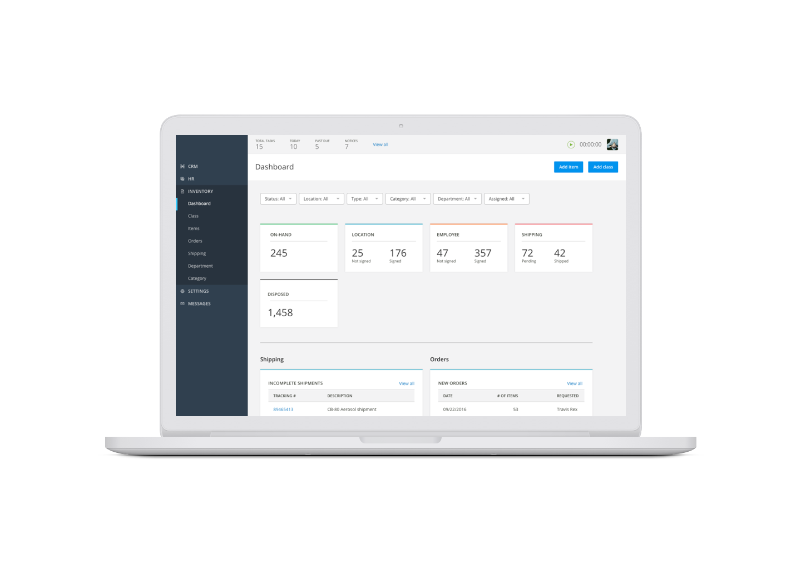
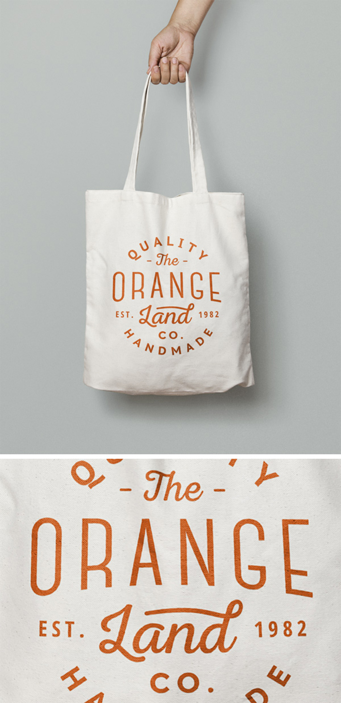

What do you do when the current SaaS offerings don’t do what you need them to, you build your own. The company that hired me to design their own product inventory app did just that. They had never worked with a user experience designer but heard that was the way to build software so they contacted me and advised me on how to go about it. In this regard, I’ve been a consultant for them, showing them the process and how to involve the user along the was, but also the UX designer.

Their business had very specific needs in how to handle inventory but also how to handle that across many offices and people. Some of the inventory gets used but some of it gets assigned to a user and they need to track to where it is at. If a piece of equipment gets worn out, they need to discard it (while keeping the data on it) and replace it with something new. The system also needed to track any transferring or shipping of items both outgoing and incoming and the receiving details (signatures) along with it.
I spent a couple of meetings doing some discovery on the process with the SMEs of the company, those that felt the pain of not having the correct system. They had an old system they were using to get by so I observed as they performed tasks in the system, noting the pain points and the problems they were trying to solve. At many times they wanted to jump right into the solution but I advised to continue talking about the problems we were trying to solve.
The next process was to start on some wireframes and workflows. At this point, I kept the designs simple to really focus on the interactions and the workflow for the user. I continued to meet with the team which included a couple of executives and engineering leads. I presented the designs using InVision which gave a better fill for progression through the system. This allowed everyone to give input into the designs and fill in the holes of the workflow. Because of the complexity of the system, this process was important. It allows me to keep discovering the problems that we were trying to solve while iterating through the designs. Through many meetings, we were able to a high confidence rank of this being the best solution.
This project is a work in progress so the next steps will be to take the designs to other users in the company and testing our solution with them.
